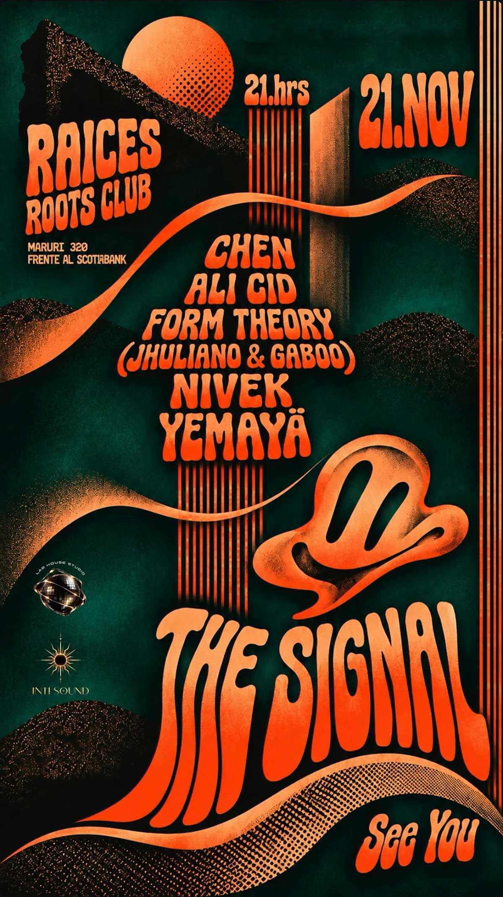

THE SIGNAL
fecha: 21/11/26 hora: 9pm
lugar: Raices Roots Club,
Calle Maruri 320 (2do piso), Cusco


🔸THE SIGNAL🔸
Llegó el momento de la señal y finalmente podemos revelar a quienes serán parte de esta noche. Diferentes caminos, distintas búsquedas y la misma conexión a través de la música.
@chen_chua_l 🐲
Curador y coleccionista de vinilos, encuentra en la música una forma de explorar, descubrir y compartir. Desde Quillabamba, también detrás de Macamango, mantiene una esencia ligada a la cultura musical y a esos sonidos que merecen ser encontrados, escuchados y disfrutados sin prisa. Su curaduría describe movimiento muy vanguardista .
@ali_cid94 🪐
Encuentra entre la inspiración y exploración electrónica, el underground y las noches que se extienden más allá de lo previsto, originalidad. Su universo se construye entre texturas, grooves y una búsqueda sonora que deja espacio para perderse en la música. Con una escena sólida en Cusco promete entregarnos movimiento y baile.
FORM THEORY — @jhuliano.c @gaboo.dep 🧬
Después de coincidir, conectar y compartir tantas horas alrededor de la música, nace FORM THEORY. Un proyecto que reúne dos perspectivas en una misma búsqueda, donde el groove, la selección y la conexión detrás de la cabina son el punto de partida. Esta noche presentan oficialmente algo que vienen construyendo juntos.
@_nivekval_ 🎩
Con un recorrido que ya forma parte de la escena, Nivek encuentra su identidad en una electrónica elegante, grooves precisos y una selección que fluye con naturalidad. Música fina, dinámica y profundamente bailable; de esa que no necesita imponerse para mantenerte dentro de la pista.
@yemaya.dj 🌞
Sonic Journey Cusco. Yemayá propone un recorrido por sonidos, atmósferas y sensaciones que conectan con otra dimensión de la pista. Una búsqueda intuitiva donde la música se transforma en viaje, movimiento y energía.
Creemos firmemente en nuevos talentos y nuevas propuestas por eso nuestro after estará a cargo de @stikferro promete hacernos bailar hasta donde la fiesta dure.
Cinco propuestas. Diferentes frecuencias. Un mismo encuentro. 🎢
THE SIGNAL 🚨📡
21 NOV · 21 HRS
420 ROOTS CLUB · CUSCO ⛓️💥
The signal is calling.
📲 Reservas & info: 932 192 810
See you on the other side. 🎣
LINE-UP:
Chen
Ali Cid
Form Theory
Nivek
Yemayä